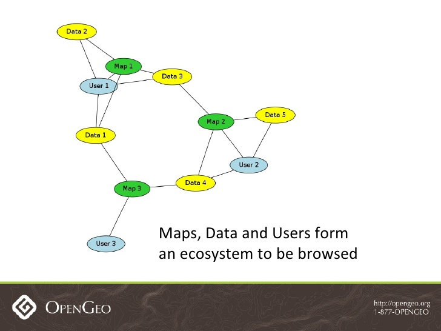
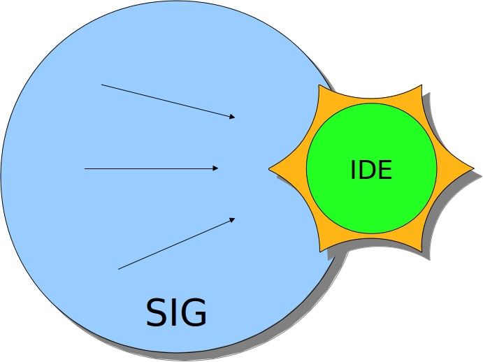
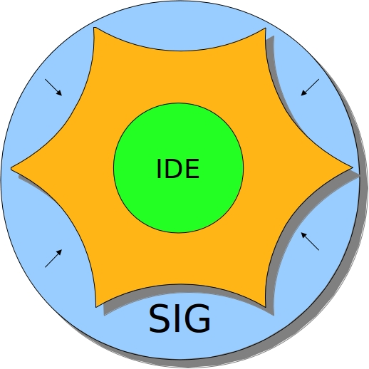

Analista en Sistemas Informáticos
En curso: Maestría en Teledetección y Sist. de Info. Geográfica
Geomática Libre - @cyberoliverio
Licenciado en Informática
Geonode:
Linux es un sistema operativo multitarea y multiusuario, basado en Unix, de código libre y puede trabajar en multiples plataformas hardware.
A Linux se lo considera un sistema fiable, sólido y potente. Incluso puede ejecutarse con muy pocos recursos en equipos de muy bajo rendimiento.
En particular, el sistema Linux posee las siguientes ventajas:
Se puede acceder al código fuente del núcleo de Linux de forma gratuita. En consecuencia, este sistema se puede recopilar en otras plataformas que no sean PC.
Para distribuir se creó un proyecto con el nombre GNU ("GNU is Not Unix" [GNU no es Unix]) donde los usuarios de GNU están sujetos a los términos de la licencia de uso GPL (Licencia de Público General).
El desarrollo de Infraestructuras de Datos Espaciales tienen diferentes FINES
como el de proporcionar
a las tareas de planeamiento un mejor conocimiento del territorio.
Se plantean problemas reales a los que debe buscar soluciones y de esta manera la enseñanza se orienta hacia la resolución de problemas.
Las IDE propician una situación de aprendizaje que permite analizar relaciones e interacciones espaciales para llegar a conclusiones propias.
Hoy en día existen plataformas WEB que permiten gestionar información geográfica logrando su estandarización para poder ser consumidas en cualquier Sistema de Información Geográfica o plataforma IDE.
Es un sistema de gestión de contenido GEOESPACIAL (Una Plataforma para la gestión y publicación de datos geoespaciales)
Reúne a los proyectos de software de código abierto estables (GeoExt, GeoServer, Django y Pycsw), bajo una interfaz coherente y fácil de utilizar para compartir datos y crear mapas interactivos
Las herramientas de Gestión de Datos integrados en GeoNode permiten la creación integrada de los DATOS, METADATOS y VISUALIZACIONES DEL MAPA
También está diseñado para ser una plataforma flexible que los desarrolladores de software puedan ampliar, modificar o integrar para cumplir los requisitos en sus propias aplicaciones.
Los usuarios, datos y mapas se unen en una especie de ECOSISTEMA de contenido geoespacial para ser navegado.



Los datos publicados por GeoServer (Servicios OGC) son:
Para unirse a la comunidad de desarrolladores
geonode@librelist.comEncontramos esto en www.geonode.org
$ sudo add-apt-repository ppa:geonode/testing (versión no estable)
$ sudo add-apt-repository ppa:geonode/release (versión estable)
$ sudo apt-get update
$ sudo apt-get install geonode
Luego creamos un superusuario de geonode,
y actualizamos la ip
$ geonode createsuperuser
$ sudo geonode-updateip 127.0.0.1